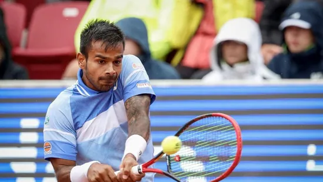
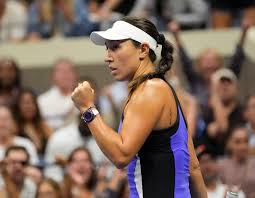

‘I wonder if Andy Murray can contribute to Novak Djokovic’s game’: Rublev questions Serbian’s coaching decision

Aiming to bounce back to form in 2025, Novak Djokovic appointed Andy Murray as his coach in November this year. Murray, who announced his retirement earlier this year, will be on court with Djokovic from the 2025 Australian Open.The decision was bombshell news for tennis fans, experts and players.
World No. 8 Andrey Rublev also joined the bandwagon and he revealed that he was left confused by the announcement as he didn’t see how it could benefit Djokovic. But Rublev also felt that their friendship could be beneficial to Djokovic during the season.
“Novak is one of the most accomplished players in history.In that way, I wonder if Andy can contribute to his game and add new elements. On the other hand, they are good friends, which benefits their collaboration. We must remember that positive energy sometimes gives much more at this level than anything else. Novak knows tennis better than everyone, and he can feel fresh and motivated with Andy in his box. It will be interesting to see Andy's reactions when Novak gets too emotional and throws bad words at his team,” said Rublev.
Djokovic and Murray met 36 times, with the Serbian ace leading 25-11 overall and 11-8 in finals. Ten of their face-offs have been in majors, with Djokovic leading 8-2. They are also one of the two male pairs to have contested the finals of each of the four majors (Djokovic-Nadal is the other).Meanwhile, the Serbian leads 20-8 on hard courts and 5-1 on clay. Murray won their two matches played on grass.
The duo are almost of the same age, with Murray being a week older. They went to training camp together and as juniors, Murray won the first fixture they played against each other. In 2006, both aged 19, partnered in doubles at the Australian Open, losing in the first round.
Sumit Nagal set to play fifth Grand Slam, earns direct entry in Australian Open

Indian tennis star Sumit Nagal is set for his fifth appearance in a Grand Slam after earning a direct entry for the main draw of next year's Australian Open.The 98th-ranked Nagal, who features in the entry list released by Tennis Australia on Friday, had to go through the qualifying rounds in the competition's previous edition.
n the first round, Nagal had stunned the 31st seed Alexander Bublik of Kazakhstan in straight sets to record a win by 6-4, 6-2, 7-6 (5), becoming the first Indian player to beat a seeded player in the main draw in singles at Grand Slam in 34 years.
However, Nagal's journey ended in the following round with a defeat to wild-card Shang Juncheng of China.
Nagal's career maintained an upward spike when he became the 10th player from India to break into top 100 in ATP rankings.
Meanwhile, reigning world No 1 and defending champion Jannik Sinner is top seeded for the Australian Open, followed by Alexander Zverev and Carlos Alcaraz. Novak Djokovic is seeded seventh.
Pegula returns to New York after US Open breakthrough for MSG exhibition that includes Alcaraz

NEW YORK — When Jessica Pegula agreed to play in an exhibition tennis event at Madison Square Garden, she had no idea how her career would change before she got there.The Buffalo native always loved playing in New York, but the U.S. Open was just like the other three tennis majors. She had never been able to get past the quarterfinals.
But shortly after committing to play in The Garden Cup, she broke through and reached the final at Flushing Meadows in September, losing to current No. 1-ranked Aryna Sabalenka and creating memories that came flooding back when she returned this week.
“So I think even now that I’ve had that great result, being able to come back, it’s even cooler,” Pegula said.
Pegula will play fellow American Emma Navarro, who lost in the U.S. Open semifinals, on Wednesday night. Carlos Alcaraz, a four-time Grand Slam champion, plays American Ben Shelton.
Alcaraz is getting back on court after a brief break, saying he didn't touch his racket for about 1 1/2 weeks after playing for Spain in the Davis Cup in what was Rafael Nadal's final appearance before retiring.
Pegula had a longer one, needing to rest a knee that was bothering her after playing in the WTA Finals in Saudi Arabia in early November. She took about three weeks off, then started hitting again about two weeks ago to prepare to play Wednesday.
She may have declined the exhibition for more time off during the short tennis offseason, but didn't want to pass up playing at MSG.
“When they were like, ‘You get to play in MSG,’ I was like, ‘Ooh, that’s sick,’” Pegula said. “To me, I just think that in general, if it wasn’t at MSG, I don’t know, then maybe I wouldn’t have done it, to be honest. It’s something that’s special to be able to do it in New York City during Christmastime. It's really cool against another American. There's so many factors I feel like that made me want to say yes.”
Heading into the year, she had been 0 for 6 in Grand Slam quarterfinal matches. Then she upset No. 1 Iga Swiatek, a massive victory in a strong summer stretch that set up her longest stay in a major tournament.
“It feels like I was just here,” Pegula said. “The stress and just everything and the chaos of those three weeks, it’s kind of funny, you feel it instantly coming back to the city.”
Pegula's parents own the NFL's Buffalo Bills and NHL's Buffalo Sabres. Even before becoming a major finalist, she felt support from the home fans when she played in New York.
But when she went to a Rangers game this week and heard loud cheers as a highlight from a U.S. Open match was played, she realized how much more there might be now.
“I think it’s so fun to play here and being an American. There’s a lot of Bills, a lot of Sabres fans that are always at the U.S. Open, whether they live here or they come to watch me,” Pegula said. “So I think I always feel a little bit of a connection just being a Western New Yorker, but New Yorker nonetheless.”